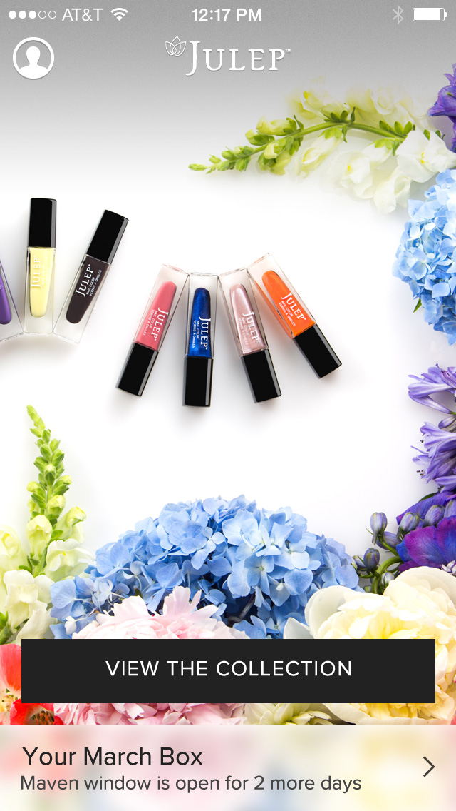
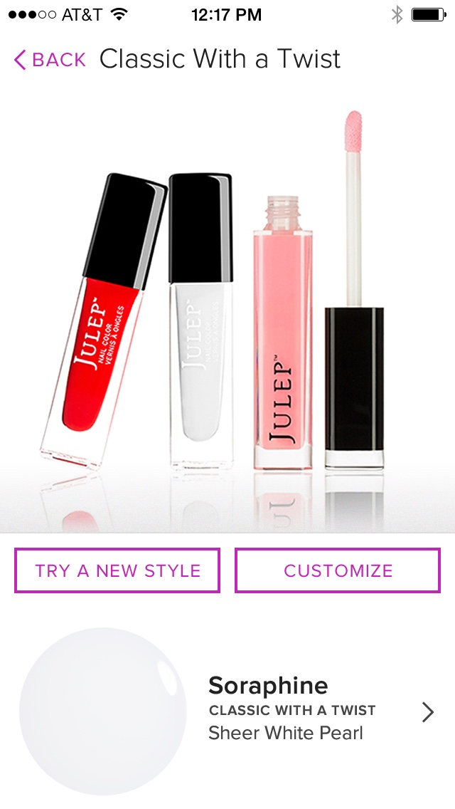
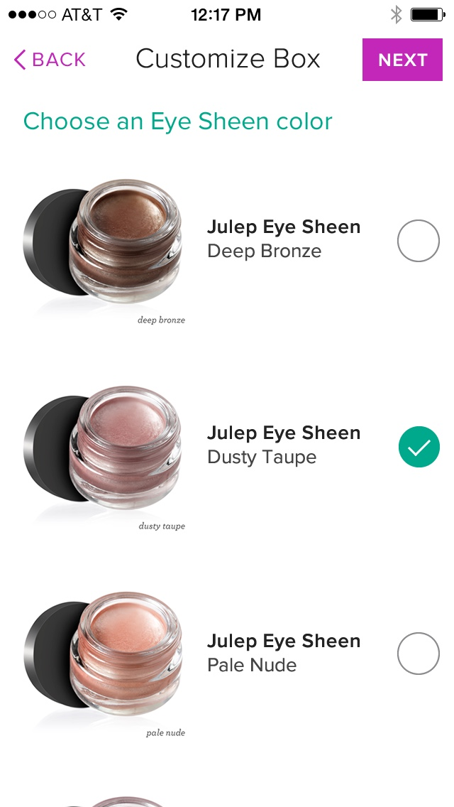

Julep Maven is a monthly subscription box full of high quality nail polishes and other beauty products. Julep was expanding their Maven subscription with new tiers, giving subscribers more options to customize the items they would recive in their upcoming monthly box, and they needed a new iPhone App as part of this update.
I worked with Toy Rockets to design an app for Julep that included this upgraded flexibility and helped clarify how to take advantage of these new features.
At first, the app was exclusive to existing Maven subscribers. Customers could see what was included in that month's box, pick a different style if they preferred, and sometimes choose a color for an item.
Later, after the changes and upgrades to the Maven subscription were introduced, the app would be updated to include a flow that would allow subscribers to customize their entire box.
Finally, all products available on the website would become browseable, searchable, and available for purchase in the app. The app would see another udate to include a cart and a full checkout flow.